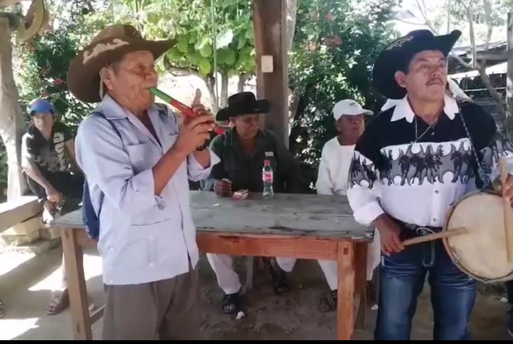
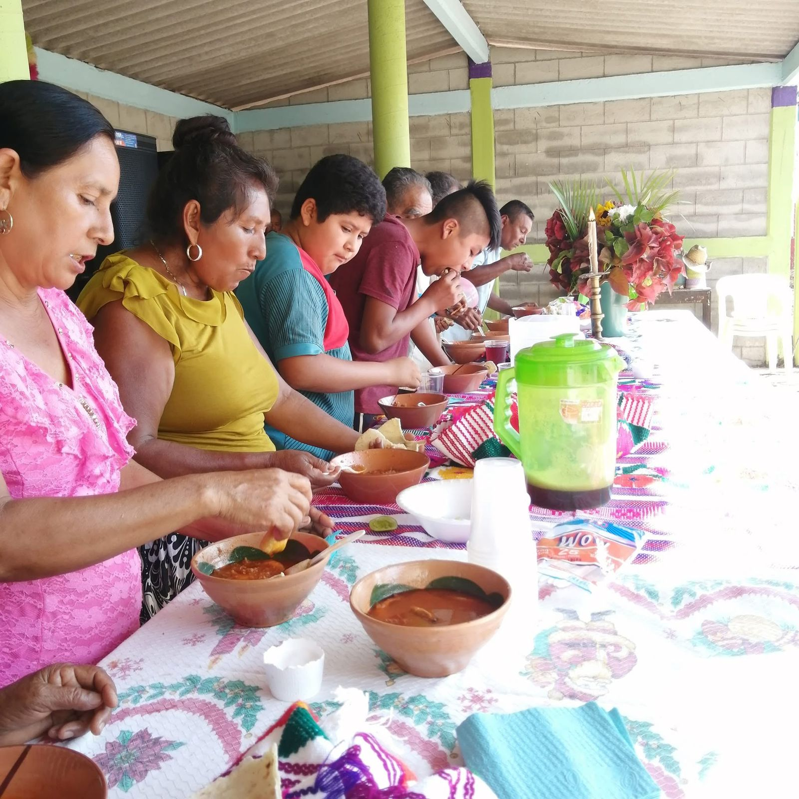

Fiesta patronal
Se celebra en honor a San Cristóbal, con misas, música y eventos tradicionales.

Danzas y música
Se preservan bailes típicos y música regional mixteca.

Gastronomía
Platillos típicos de la región como caldo de res, frijol.